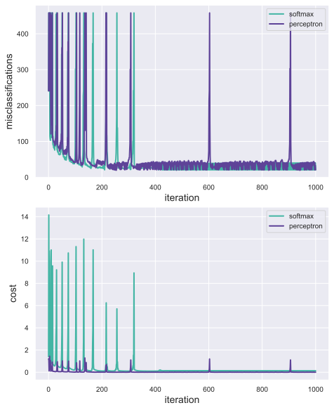
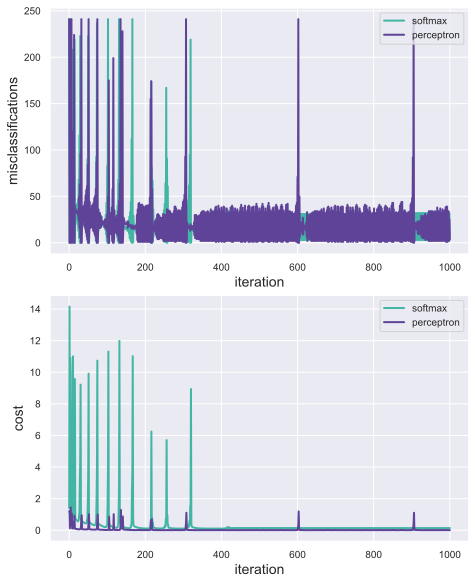
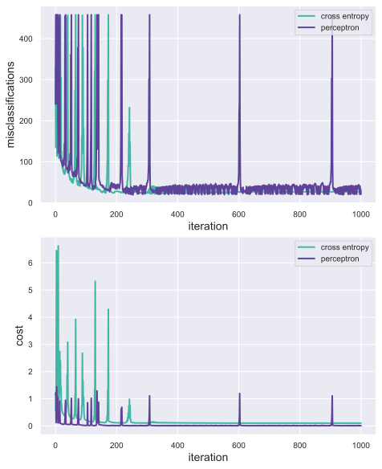
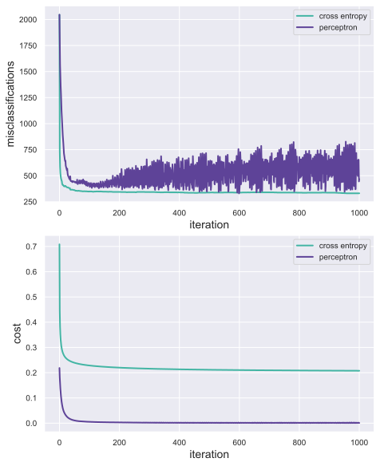
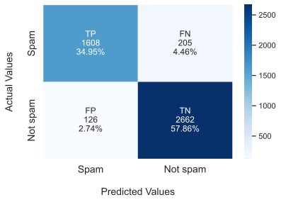
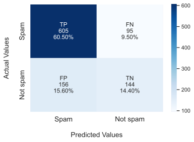
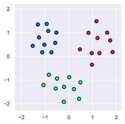
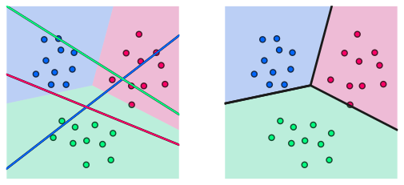

Technical reports with R Markdown & Bookdown (A test of Quarto)
Test subtitle
Author
Matthew Bain
Published
March 22, 2024
Abstract
I provide markdown snippets for a variety of text environments and formats that can be created with R Markdown and the Bookdown package. I focus on the elements that I find most useful for writing math.
PHYSICS 3G03 HW 3: Two-class and multi-class classification
Matthew Bain (001406931)
We start by importing all the Python libraries we will need for this project. We also define some global parameters.
Code
### load dependencies# essentialsimport numpy.linalg as LA # linalg module of numpyimport pandas as pd # pandas for data manipulationimport autograd.numpy as np # autograd-wrapped numpy# optimizationfrom autograd import grad # module for computing gradientfrom autograd import value_and_grad # returns grad & val of input function# plottingimport matplotlib.pyplot as plt # pyplot module of matplotlib# global plotting parametersplt_colours = (np.array([94,255,231])/360, np.array([133,94,214])/360, np.array([110,250,152])/360)font_size =14font_name = {'fontname': 'Avenir'}
Exercise 1Predicting breast cancer
In this problem we examinine the Breast Cancer Data Set, obtained from the University of Wisconsin Hospitals, Madison from Dr. William H. Wolberg 1.
1.1 Softmax and perceptron cost
In this exercise we implement the softmax and perceptron cost functions.
notes - class labels are coded as \(1\) for benign, \(-1\) for malignant. - the dataset is arranged in columns, each corresponding to an individual & each row a cellular measurement. Class labels are stored in the final row.
Below we import the dataset.
Code
### setup datasetimport numpy as np# data inputdatapath ='/Users/matthewbain/Documents/Math/courses/semester II/'+\'PHYS 3G03/3G0-assignments/HW 3/code/'csvname = datapath +'breast_cancer_data.csv'data = np.loadtxt(csvname, delimiter =',')# get input and output of datasetx = data[:-1, :] # feature vectorsy = data[-1:, :] # class labels {1,-1}
We now define our model and complete an implementation of the softmax and perceptron cost functions.
Code
### define model and cost functions# define model (compute linear combination of input points)def model(x, w): a = w[0] + np.dot(x.T, w[1:])return a.T## cost functions (`g`)# softmax cost implementation# note: x,y req. by cost but def. globally s.t. for given w compute cost# across all x,y)def softmax(w):# note: equivalent to softnax aoprox to perceptron cost, below cost = np.sum(np.log(1+ np.exp(-y*model(x, w))))return cost/float(np.size(y))# perceptron cost implementationdef perceptron(w):# sum of pair-wise maximum between 0, model values cost = np.sum(np.maximum(0, -y*model(x, w)))return cost/float(np.size(y))
1.2 Minimizing cost functions
We will now optimize these cost functions using gradient descent.
Below we define (once again) the standard gradient descent algorithm.
Code
### GD functiondef gradient_descent(g, alpha, max_its, w):import autograd.numpy as npfrom autograd import grad# define alpha based on chosen cost function# alpha = 1.0 if g == softmax else .1if g == softmax: alpha =1.0elif g == perceptron: alpha =.1elif g == cross_entropy: alpha =.6# compute gradient (wrt w, holding constant x,y) gradient = grad(g)# run GD loop weight_history = [w] # weight history container cost_history = [g(w)] # cost function history containerfor k inrange(max_its):# evaluate the gradient grad_eval = gradient(w)# take gradient descent step w = w - alpha*grad_eval# record weight and cost weight_history.append(w) cost_history.append(g(w))return weight_history, cost_history
Below we define our parameters and then minimize both cost functions.
Code
### optimize cost functionsimport autograd.numpy as np# define gradient descent (GD) parametersmax_its =1000w =0.1*np.random.randn(9, 1) # initial starting weights# call GD (choose arb alpha for now bc based on chosen g)weight_history_SM, cost_history_SM = gradient_descent(softmax, 1, max_its, w)weight_history_PT, cost_history_PT = gradient_descent(perceptron, 1, max_its, w)
1.3 Misclassifications
We now compute the number of misclassifications for each iteration of gradient descent.
Code
### compute misclassification historyimport autograd.numpy as np# compute misclassification historydef miscount(w, x, y):# +1 or -1 whether above or below fitted decision bound determined by w y_pred = np.sign(model(x, w))# pairwise compare vectors: 1 if model class pred == true class; sum miscount_curr = np.sum(y_pred != y)return miscount_curr# compute miscount history for each cost functionmiscount_history_SM = [miscount(v, x, y) for v in weight_history_SM]miscount_history_PT = [miscount(v, x, y) for v in weight_history_PT]
1.4 Plotting: cost and misclassifications
Below we plot the cost and misclassification history for each cost function.
Code
### define function for plotting cost and misclassification hist in same figuredef plot_cost_and_miscount(data):import matplotlib.pyplot as pltimport numpy as npimport seaborn as snsimport pandas as pd# store data x_plt = data["x_plt"] y_miscount_SM = data["y_miscount_SM"] y_cost_SM = data["y_cost_SM"] y_miscount_PT = data["y_miscount_PT"] y_cost_PT = data["y_cost_PT"]# use seaborn style sns.set_theme()# to prevent warning messages from appearing in the reportimport warnings; warnings.filterwarnings('ignore')# set inline figure format/quality, overall params%config InlineBackend.figure_format ='svg'# setup plot & subplots fig, axs = plt.subplots(2, 1, figsize = np.array([6.5, 8]), constrained_layout =True) # overall layout, size# axs[0] = plt.subplot(1,3,(1,2), frameon = 1) axs[0] = plt.subplot(211, frameon =1) axs[1] = plt.subplot(212, frameon =1)# set axis tick sizes axs[0].xaxis.set_tick_params(labelsize = font_size -4) axs[0].yaxis.set_tick_params(labelsize = font_size -4) axs[1].xaxis.set_tick_params(labelsize = font_size -4) axs[1].yaxis.set_tick_params(labelsize = font_size -4)# plot overlay of misclassifications & costs for each cost over it line_miscount_SM = axs[0].plot(x_plt, y_miscount_SM, color = plt_colours[0], linestyle ='-', linewidth =2) line_miscount_PT = axs[0].plot(x_plt, y_miscount_PT, color = plt_colours[1], linestyle ='-', linewidth =2) line_cost_SM = axs[1].plot(x_plt, y_cost_SM, color = plt_colours[0], linestyle ='-', linewidth =2) line_cost_PT = axs[1].plot(x_plt, y_cost_PT, color = plt_colours[1], linestyle ='-', linewidth =2)# add labels# axs[0].set_xlabel('iteration', fontsize = font_size, **font_name) axs[0].set_xlabel('iteration', fontsize = font_size) axs[0].set_ylabel('misclassifications', fontsize = font_size) axs[1].set_xlabel('iteration', fontsize = font_size) axs[1].set_ylabel('cost', fontsize = font_size)# plot legend leg_labels = ['softmax', 'perceptron'] axs[0].legend([line_miscount_SM, line_miscount_PT], labels = leg_labels, loc ='upper right', frameon =1, fontsize = font_size -4) axs[1].legend([line_cost_SM, line_cost_PT], labels = leg_labels, loc ='upper right', frameon =1, fontsize = font_size -4) plt.show()
Code
### store data and plotimport pandas as pd# store plotting data in data frameplot_data = pd.DataFrame( {"x_plt": np.arange(np.size(miscount_history_SM)),"y_miscount_SM": miscount_history_SM,"y_cost_SM": cost_history_SM,"y_miscount_PT": miscount_history_PT,"y_cost_PT": cost_history_PT })# plotplot_cost_and_miscount(plot_data)

Below we identify and return the minimum number of misclassifications for each cost function over all iterations of gradient descent.
Below we modify the miscount function to consider only misclassified malignant cases (i.e., cases corresponding to the class label \(-1\)).
Code
#### define misclassification rateimport autograd.numpy as np# compute misclassification historydef miscount_neg(w, x, y):# +1 or -1 whether above or below fitted decision bound determined by w y_pred = np.sign(model(x, w))# consider only malignant cases miscount_curr = np.sum(y_pred[y ==-1] !=-1)return miscount_curr# compute new miscount history for each cost functionmiscount_history_SM_neg = [miscount_neg(v, x, y) for v in weight_history_SM]miscount_history_PT_neg = [miscount_neg(v, x, y) for v in weight_history_PT]
Below we again plot misclassification and cost history side-by-side, this time considering only misclassified malignant cases.
Code
### store data and plot# import pandas for data frame capabilitiesimport pandas as pd# store plotting data in data frameplot_data = pd.DataFrame( {"x_plt": np.arange(np.size(miscount_history_SM_neg)),"y_miscount_SM": miscount_history_SM_neg,"y_cost_SM": cost_history_SM,"y_miscount_PT": miscount_history_PT_neg,"y_cost_PT": cost_history_PT })# plotplot_cost_and_miscount(plot_data)

0.0.11.5 Logistic regression & cross-entropy
In this exercise we compare the above results to those obtained using logistic regression with a cross entropy cost.
The provided code below converts our class labels y = \(\{-1, 1\}\) to \(\{0, 1\}\).
Code
### setup datasety_1 = np.squeeze(y) # flatten y (one dimension)y_ben = np.argwhere(y_1 >0.9) # returns all indices where y meets conditiony_mal = np.argwhere(y_1 <-0.9)yc = np.arange(699) # class labels (`y`) for CE (cross-entropy) costyc[y_ben] =1yc[y_mal] =0
The code below (provided to us) implements the cross entropy cost function, with L2 regularization.
Code
### define model and cross entropy cost# define sigmoid functiondef sigmoid(t):return1/(1+ np.exp(-t))## the (convex) cross-entropy cost functionlam =2*10**(-3) # regularization parameterdef cross_entropy(w):# compute sigmoid of model sig_eval = sigmoid(model(x, w))# compute cost of label 0 points ind_mal = np.argwhere(yc ==0) cost =-np.sum(np.log(1- sig_eval[:, ind_mal]))# add (subtract) cost on label 1 points ind_ben = np.argwhere(yc ==1) cost -= np.sum(np.log(sig_eval[:, ind_ben]))# add regularizer (* regularization parameter) cost += lam*np.sum(w[1:]**2)# compute cross-entropyreturn cost/float(np.size(yc))
Below we run gradient descent to optimize the cross entropy cost function for logistic regression.
Code
### optimize cost function using GDimport autograd.numpy as np# define gradient descent parametersmax_its =1000w =0.1*np.random.randn(9, 1) # initial starting weights# call GD (choose arb alpha for now bc based on chosen g)weight_history_CE, cost_history_CE = gradient_descent(cross_entropy, 1, max_its, w)
We now compute misclassification history. To do so we must modify miscount to compute misclassifications in a manner appropriate to logistic regression. Since the sigmoid function varies between 0 and 1 and is symmetric (about a \(180^{\circ}\) rotation centered at \((0, 0.5)\)), we can use \(y = 0.5\) to effectively separate our predictions into the two classes labelled \(\{0, 1\}\). Then, as before, we can determine misclassiffications by comparing the predicted classes across weight_history with the true class labels.
Code
### compute misclassification historyimport autograd.numpy as np# compute misclassification historydef miscount_CE(w, x, y): y_pred = np.sign(model(x, w)) # 1 or 1 if eval > .5# convert predictions to classes based on y = .5 threshold value y_pred[y_pred >=.5] =1 y_pred[y_pred <.5] =0# pairwise compare vectors: 1 if model class pred == true class; sum miscount_curr = np.sum(y_pred != y)return miscount_curr# compute new miscount history for cross entropy costmiscount_history_CE = [miscount_CE(v, x, yc) for v in weight_history_CE]
And finally, below we plot cost and misclassification history for the logistic regression cross entropy cost, as we did above for the softmax and perceptron cost functions (alongside the results for the perceptron cost function). First we make a couple minor modifications to generalize our plotting function and allow us to plot cross entropy cost in addition to softmax cost.
Code
### define plotting functiondef plot_cost_and_miscount(data):import matplotlib.pyplot as pltimport numpy as npimport seaborn as snsimport pandas as pd# store data x_plt = data["x_plt"]# y_miscount_1 = data["y_miscount_CE"]# y_cost_1 = data["y_cost_CE"]# y_miscount_2 = data["y_miscount_PT"]# y_cost_2 = data["y_cost_PT"] y_miscount_1 = data.iloc[:, 1] y_cost_1 = data.iloc[:, 2] y_miscount_2 = data.iloc[:, 3] y_cost_2 = data.iloc[:, 4]# use seaborn style sns.set_theme()# to prevent warning messages from appearing in the reportimport warnings; warnings.filterwarnings('ignore')# set inline figure format/quality, overall params%config InlineBackend.figure_format ='svg'# setup plot & subplots fig, axs = plt.subplots(2, 1, figsize = np.array([6.5, 8]), constrained_layout =True) # overall layout, size# axs[0] = plt.subplot(1,3,(1,2), frameon = 1) axs[0] = plt.subplot(211, frameon =1) axs[1] = plt.subplot(212, frameon =1)# set axis tick sizes axs[0].xaxis.set_tick_params(labelsize = font_size -4) axs[0].yaxis.set_tick_params(labelsize = font_size -4) axs[1].xaxis.set_tick_params(labelsize = font_size -4) axs[1].yaxis.set_tick_params(labelsize = font_size -4)# plot overlay of misclassifications & costs for each cost over all it line_miscount_CE = axs[0].plot(x_plt, y_miscount_1, color = plt_colours[0], linestyle ='-', linewidth =2) line_miscount_PT = axs[0].plot(x_plt, y_miscount_2, color = plt_colours[1], linestyle ='-', linewidth =2) line_cost_CE = axs[1].plot(x_plt, y_cost_1, color = plt_colours[0], linestyle ='-', linewidth =2) line_cost_PT = axs[1].plot(x_plt, y_cost_2, color = plt_colours[1], linestyle ='-', linewidth =2)# add labels# axs[0].set_xlabel('iteration', fontsize = font_size, **font_name) axs[0].set_xlabel('iteration', fontsize = font_size) axs[0].set_ylabel('misclassifications', fontsize = font_size) axs[1].set_xlabel('iteration', fontsize = font_size) axs[1].set_ylabel('cost', fontsize = font_size)# plot legend leg_labels = ['cross entropy', 'perceptron'] axs[0].legend([line_miscount_CE, line_miscount_PT], labels = leg_labels, loc ='upper right', frameon =1, fontsize = font_size -4) axs[1].legend([line_cost_CE, line_cost_PT], labels = leg_labels, loc ='upper right', frameon =1, fontsize = font_size -4) plt.show()
Code
### store data and plotimport pandas as pd# store plotting data in data frameplot_data = pd.DataFrame( {"x_plt": np.arange(np.size(miscount_history_CE)),"y_miscount_CE": miscount_history_CE,"y_cost_CE": cost_history_CE,"y_miscount_PT": miscount_history_PT,"y_cost_PT": cost_history_PT })# plotplot_cost_and_miscount(plot_data)

Exercise 2Spam detection
In this problem we examinine the Spambase Data Set2, containing measurements of spam and non-spam emails. Using the two-class classification methods we explored in the above exercises, we build a classifier to determine if an email is likely to be spam.
notes
Class labels (1 for ‘spam’, -1 for ‘not spam’) are again stored in the final row (\(N = 58\)) of the dataset, with each other row \(n\) representing a feature (word/character frequencies, etc.) and each column \(p\) a sample (\(P = 4601\)).
Below we import the dataset.
Code
### import datasetimport numpy as np# data inputdatapath ='/Users/matthewbain/Documents/Math/courses/semester II/PHYS 3G03/' \'3G0-assignments/HW 3/code/'csvname = datapath +'spambase_data.csv'data = np.loadtxt(csvname, delimiter =',')# get input and output of datasetx = data[:-1, :] # feature vectorsy = data[-1:, :] # class labels {1,-1}
Some basic preprocessing
We now perform some preprocessing to prepare the dataset for our analysis. We standard normalize each feature (s.t. \(\mu_n = 0\) and \(\sigma_n = 1\), where \(\mu\) represents the mean and \(\sigma\) the standard deviation) so that they can be treated equally by our classifier. To do so, for each observation \(x_{n,p}\) we subtract the corresponding mean \(\mu_n\) and divide by the corresponding standard deviation \(\sigma_n\).
To deal with missing observations for a given feature (represented as NaN), we replace NaN with the corresponding feature mean \(\mu_n\).
The following function (provided to us) executes the above.
Code
### perform standard normalization and fill in missing datadef standard_normalizer(x):# compute the mean and standard deviation of each feature x_means = np.nanmean(x, axis =1)[:, np.newaxis] x_stds = np.nanstd(x, axis =1)[:, np.newaxis]# check to make sure that x_stds > small threshold; for those not# divide by 1 instead of original standard deviation ind = np.argwhere(x_stds <10**(-2))iflen(ind) >0: ind = [v[0] for v in ind] # just keep row index adjust = np.zeros((x_stds.shape)) # array of indices to replace with 1 adjust[ind] =1.0 x_stds += adjust# fill in any nan values with corresponding feature mean ind = np.argwhere(np.isnan(x) ==True)for i in ind: x[i[0], i[1]] = x_means[i[0]]# create standard normalizer function normalizer =lambda data: (data - x_means)/x_stds# create inverse standard normalizer inverse_normalizer =lambda data: data*x_stds + x_means# return (inverse) normalizerreturn normalizer, inverse_normalizer## standard normalize datasetnormalizer, inverse_normalizer = standard_normalizer(x) # get std norm functionsx = normalizer(x)
2.1 Email classification with softmax and perceptron
In this exercise we classify emails using the softmax and perceptron cost functions.
Steps:
We carry out the same sequence of steps covered in detail in exercise 1:
Identify optimal decision boundary (determined by weights \(w\)):
run gradient descent to identify \(w\) that minimizes cost functions
other parameters: max its = 1000; w = 0.1*np.random.randn(N + 1, 1), where \(N = 57\)
Compute misclassification histories
Plot cost and misclassification as a function of gradient descent iteration
Code
### 1) optimize softmax and perceptron costs over `spambase` datasetimport autograd.numpy as np# define gradient descent parametersmax_its =1000w =0.1*np.random.randn(np.shape(x)[0] +1, 1) # initial starting weights# call GD (choose arb alpha for now bc based on chosen g)weight_history_SM_spam, cost_history_SM_spam = gradient_descent(softmax, 1, max_its, w)weight_history_PT_spam, cost_history_PT_spam = gradient_descent(perceptron, 1, max_its, w)
Code
### 2) compute misclassification history for each cost functionmiscount_history_SM_spam = [miscount(v, x, y) for v in weight_history_SM_spam]miscount_history_PT_spam = [miscount(v, x, y) for v in weight_history_PT_spam]
Code
### 3) for each cost, plot cost and misclassification as a function of iteration## store data and plotimport pandas as pd# store plotting data in data frameplot_data = pd.DataFrame( {"x_plt": np.arange(np.size(miscount_history_SM_spam)),"y_miscount_SM": miscount_history_SM_spam,"y_cost_SM": cost_history_SM_spam,"y_miscount_PT": miscount_history_PT_spam,"y_cost_PT": cost_history_PT_spam })## plotplot_cost_and_miscount(plot_data)

The plots above reveal some interesting results. The perceptron cost appears to attain a stable minimum cost, but its misclassification history appears to fluctuate rapidly between ~250 and 750 misclassifications. On the other hand, the softmax cost appears to attain a stable, albeit higher, minimum cost, but its misclassification history reaches a similar minimum to the softmax cost and is stable (does not fluctate rapidly). This suggests that the perceptron cost function is not perfectly flat at the identified minimum, causing minor perturbations in weight to produce large deviations from the minimum. It is possible that different (non-standard) gradient descent schemes (e.g., fully normalized) would eliminate this behaviour.
2.2 Accuracy
In this exercise we determine the misclassification minimum and convert it to accuracy.
As we can see above, both classifiers, trained using a softmax and perceptron cost, respectively, appear to perform relatively well, with accuracies above 90%. However, softmax cost performs slighly better, with 3 fewer misclassifications than the perceptron. This result reflects our expectations based on the misclassification and cost histories plotted above.
2.3 Confusion matrix
In this exercise we identify the optimal w found by the softmax cost and construct the corresponding confusion matrix 3.
Code
### construct confusion matrix for optimal softmax `w`## define model again (compute linear combination of input points)def model(x, w): a = w[0] + np.dot(x.T, w[1:])return a.T## identify optimal `w` for costw_optimal_SM_spam = weight_history_SM_spam[np.argmin(miscount_history_SM_spam)]# w_optimal_PT_spam = weight_history_PT_spam[np.argmin(miscount_history_PT_spam)]### function for plotting confusion matrixdef plot_confusion_matrix(w, x, y):import seaborn as snsimport pandas as pdimport numpy as np# +1 or -1 whether above or below fitted decision bound determined by w y_pred = np.sign(model(x, w))## determine confusion matrix values (true pos/neg, false pos/neg) TP = np.sum(y_pred[y ==1] ==1) TN = np.sum(y_pred[y ==-1] ==-1) FP = np.sum(y_pred[y ==-1] !=-1) FN = np.sum(y_pred[y ==1] !=1)# store values in dictionary, matrix for plotting confusion_matrix_OP = {"TP": TP, "TN": TN, "FP": FP, "FN": FN}# confusion_matrix_OP["TN"] = TN conf_matrix = np.array([[TP, FN], [FP, TN]])## plot confusion matrix# set annotations for tiles based on counts group_names = ['TP', 'FN', 'FP', 'TN'] group_counts = ["{0:0.0f}".format(value) for value in conf_matrix.flatten()] group_percentages = ["{0:.2%}".format(value) for value in conf_matrix.flatten()/np.sum(conf_matrix)] tile_labels = [f"{v1}\n{v2}\n{v3}"for v1, v2, v3 inzip(group_names, group_counts, group_percentages)] tile_labels = np.asarray(tile_labels).reshape(2, 2)# plot ax = sns.heatmap(conf_matrix, annot = tile_labels, fmt ='', cmap ='Blues')# labels ax.set_xlabel('\nPredicted Values', fontsize = font_size) ax.set_ylabel('Actual Values\n', fontsize = font_size); ax.xaxis.set_ticklabels(['Spam', 'Not spam'], fontsize = font_size) ax.yaxis.set_ticklabels(['Spam', 'Not spam'], fontsize = font_size) plt.show()return confusion_matrix_OP## plot confusion matrix for softmax and optimal weightconfusion_matrix = plot_confusion_matrix(w_optimal_SM_spam, x, y)

Exercise 3Credit check
In this problem we examinine a dataset containing credit ratings, described in Example 6.11 of Machine Learning Refined4.
notes
Class labels (1 for ‘good rating’, -1 for ‘bad rating’) are again stored in the final row of the dataset (\(N = 20\)), with each other row \(n\) representing a feature (account balance, duration of previous credit, etc.) and each column \(p\) a sample (\(P = 1000\)).
Below we import the dataset.
3.3 Determine the confusion matrix for the optimal weights determined with the perceptron cost.
Code
### import datasetimport numpy as np# data inputdatapath ='/Users/matthewbain/Documents/Math/courses/semester II/PHYS 3G03/' \'3G0-assignments/HW 3/code/'csvname = datapath +'credit_dataset.csv'data = np.loadtxt(csvname, delimiter =',')# get input and output of datasetx = data[:-1, :] # feature vectorsy = data[-1:, :] # class labels {1,-1}
3.1 Standard normalization
Below we standard normalize the dataset so that features can be compared.
Code
### perform standard normalizationnormalizer, inverse_normalizer = standard_normalizer(x) # get std norm functionsx = normalizer(x)
3.2 Fitting perceptron-based classifier
Below we fit a binary classifier using a perceptron cost.
Code
### optimize perceptron cost over `credit rating` datasetimport autograd.numpy as np# define gradient descent parametersmax_its =1000w =0.1*np.random.randn(np.shape(x)[0] +1, 1) # initial starting weights# call GD (choose arb alpha for now bc based on chosen g)weight_history_PT_cred, cost_history_PT_cred = gradient_descent(perceptron, 1, max_its, w)
Code
### compute misclassification historymiscount_history_PT_cred = [miscount(v, x, y) for v in weight_history_PT_cred]
Code
### store data for plottingimport pandas as pd# store plotting datax_plt = np.arange(np.size(miscount_history_PT_cred))y_miscount_PT = miscount_history_PT_credy_cost_PT = cost_history_PT_cred
Code
### plot cost and misclassification history for perceptron costimport matplotlib.pyplot as pltimport numpy as npimport seaborn as snsimport pandas as pd# use seaborn stylesns.set_theme()# to prevent warning messages from appearing in the reportimport warnings;warnings.filterwarnings('ignore')# set inline figure format/quality, overall params%config InlineBackend.figure_format ='svg'# setup plot & subplotsfig, axs = plt.subplots(2, 1, figsize = np.array([6.5, 8]), constrained_layout =True) # overall layout, size# axs[0] = plt.subplot(1,3,(1,2), frameon = 1)axs[0] = plt.subplot(211, frameon =1)axs[1] = plt.subplot(212, frameon =1)# set axis tick sizesaxs[0].xaxis.set_tick_params(labelsize = font_size -4)axs[0].yaxis.set_tick_params(labelsize = font_size -4)axs[1].xaxis.set_tick_params(labelsize = font_size -4)axs[1].yaxis.set_tick_params(labelsize = font_size -4)# plot overlay of misclassifications & costs for each cost over all itline_miscount_CE = axs[0].plot(x_plt, y_miscount_PT, color = plt_colours[0], linestyle ='-', linewidth =2)line_cost_CE = axs[1].plot(x_plt, y_cost_PT, color = plt_colours[0], linestyle ='-', linewidth =2)# add labels# axs[0].set_xlabel('iteration', fontsize = font_size, **font_name)axs[0].set_xlabel('iteration', fontsize = font_size)axs[0].set_ylabel('misclassifications', fontsize = font_size)axs[1].set_xlabel('iteration', fontsize = font_size)axs[1].set_ylabel('cost', fontsize = font_size)plt.show()
The perceptron achieves a classification accuracy of ~76%, which is within the range of the accuracy achieved in Machine Learning Refined.
3.3 Confusion matrix
We now plot the confusion matrix corresponding to the optimal weight identified by the perceptron.
Code
### plot confusion matrix for perceptron and optimal weightw_optimal_PT_cred = weight_history_PT_cred[np.argmin(miscount_history_PT_cred)]confusion_matrix = plot_confusion_matrix(w_optimal_PT_cred, x, y)

Exercise 4Three-class classification
In this problem we examinine a three-class toy dataset, shown in Fig. 7.9 of Machine Learning Refined5, using the multi-class perceptron. Additional resources (including plotting functions) are provided in the official ‘MLR’ git repository 6.
4.1 Fitting multi-class perceptron
Below we fit the multi-class perceptron to the dataset.
Code
### import dataset & standard normalizeimport numpy as np# data inputdatapath ='/Users/matthewbain/Documents/Math/courses/semester II/PHYS 3G03/' \'3G0-assignments/HW 3/code/'csvname = datapath +'3class_data.csv'data = np.loadtxt(csvname, delimiter =',')# get input and output of datasetx = data[:-1, :] # feature vectorsy = data[-1:, :] # class labels {1,-1}## normalizenormalizer, inverse_normalizer = standard_normalizer(x) # get std norm functionsx = normalizer(x)
Code
### define model and multi-class perceptron (*provided code*)## compute C linear combinations of input point, one per classifierdef model(x, w): a = w[0] + np.dot(x.T, w[1:])return a.T## multi-class perceptronlam =10**-5# regularization paramterdef multiclass_perceptron(w):# pre-compute predictions on all points all_evals = model(x, w)# compute maximum across data points a = np.max(all_evals, axis =0)# compute cost in compact form using numpy broadcasting b = all_evals[y.astype(int).flatten(), np.arange(np.size(y))] cost = np.sum(a - b)# add regularizer cost = cost + lam*np.linalg.norm(w[1:, :], 'fro')**2# return averagereturn cost/float(np.size(y))
Code
### fit multi-class perceptronimport autograd.numpy as np# define gradient descent parametersmax_its =1000w =0.1*np.random.randn(3, 3) # initial starting weights# call GD (choose arb alpha for now bc based on chosen g)weight_history_3CPT, cost_history_3CPT = gradient_descent( multiclass_perceptron, .1, max_its, w)
Code
### plot cost history## store datax_plt = np.arange(np.shape(weight_history_3CPT)[0])y_cost_3CPT = cost_history_3CPT## plotdef plot_cost_history(x, y):import matplotlib.pyplot as pltimport numpy as npimport seaborn as snsimport pandas as pd# use seaborn style sns.set_theme()# setup plot fig, ax = plt.subplots(1, 1, figsize = np.array([5, 5]), constrained_layout =True) # overall layout, size ax = plt.subplot(111, frameon =1)# set axis tick sizes ax.xaxis.set_tick_params(labelsize = font_size -4) ax.yaxis.set_tick_params(labelsize = font_size -4)# plot cost history y_cost_3CPT = ax.plot(x, y, color = plt_colours[0], linestyle ='-', linewidth =2)# add labels ax.set_xlabel('iteration', fontsize = font_size) ax.set_ylabel('cost', fontsize = font_size) plt.show()plot_cost_history(x_plt, y_cost_3CPT)
### define new function to compute multi-class misclassification historydef miscount_3CPT(w, x, y):# 0-2 based on weight that maximizes prediction# y_pred = np.argmax(np.abs(model(x, w), axis = 0), axis = 0)# compute prediction for all points all_evals = model(x, w)# assign point class of DB that maximumizes distance to DB y_pred = np.argmax(all_evals, axis =0)# pairwise compare vectors: 1 if model class pred == true class; sum miscount_curr = np.sum(y_pred != y)return miscount_curr
Code
### compute accuracy for optimal weight (minimum misclassifications)# compute misclassificationsmiscount_history_3CPT = [miscount_3CPT(v, x, y) for v in weight_history_3CPT]# find minimum misclassifications and convert to accuracymin_misclass_3CPT =min(miscount_history_3CPT)print("multi-class perceptron minimum misclassifications: "+str(min_misclass_3CPT))# convert to accuraciesaccuracy_3CPT =1- (min_misclass_3CPT)/np.shape(x)[1]print("multi-class perceptron accuracy: "+str(accuracy_3CPT))
“Can you achieve as good a classification as shown in Fig. 7.9 in the book ?”
4.2 Plotting the decision boundary
Below we plot the data in the plane, along with the decision boundary obtained by the multi-class perceptron.
Code
# code to clone library from git repo subdirectory# (from Ciro Santilli @ https://stackoverflow.com/questions/600079/how-do-i-clone-a-subdirectory-only-of-a-git-repository)# git clone \# --depth 1 \# --filter=blob:none \# --sparse \# https://github.com/jermwatt/machine_learning_refined \# ;# cd machine_learning_refined# git sparse-checkout set mlrefined_libraries
Code
### plot data and decision boundary# import relevant MLR plotting libraries (store lib in current dir)from mlrefined_libraries import superlearn_library as superlearnfrom mlrefined_libraries import math_optimization_library as optliboptimizers = optlib.optimizersclassif_plotter = superlearn.multi_lin_classification_democost_lib = superlearn.cost_functionsnormalizers = superlearn.normalizers# store std. normalized dataset to pass to function (colours = class labels)data_norm = np.append(x, y, axis =0)data_norm[-1,0] =0# plot individual data points in planedemo = superlearn.multiclass_illustrator.Visualizer(data_norm)demo.show_dataset()# add DBs (pass weights defining 3 class DBs that give perfect accuracy)demo.show_complete_coloring([weight_history_3CPT[-1]], cost = multiclass_perceptron)


The multi-class perceptron achieves a classification accuracy of 100%, yielding results that are comparable to those shown in Machine Learning Refined.
Footnotes
Watt, J., Borhani, R., & Katsaggelos, A. K. (2020). Machine learning refined: Foundations, algorithms, and applications. Cambridge University Press.↩︎
Watt, J., Borhani, R., & Katsaggelos, A. K. (2020). Machine learning refined: Foundations, algorithms, and applications. Cambridge University Press.↩︎
Watt, J., Borhani, R., & Katsaggelos, A. K. (2020). Machine learning refined: Foundations, algorithms, and applications. Cambridge University Press.↩︎
Watt, J., Borhani, R., & Katsaggelos, A. K. (2020). Machine learning refined: Foundations, algorithms, and applications. Cambridge University Press.↩︎
Watt, J., Borhani, R., & Katsaggelos, A. K. (2020). Machine learning refined: Foundations, algorithms, and applications. Cambridge University Press.↩︎